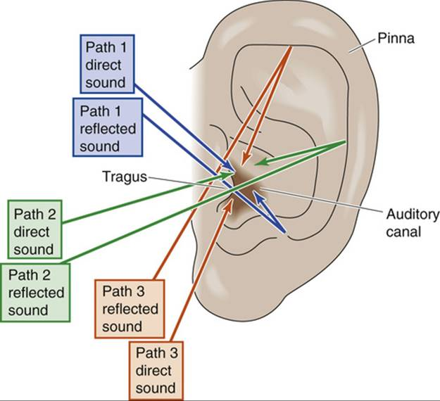
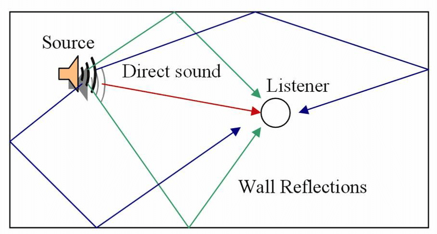

A. Các lý thuyết
Trước khi đến với plugin của mình, chúng ta cần hiểu các khái niệm vật lý cơ bản để rõ hơn tác dụng của plugin này.
I. Cách chúng ta định hướng âm thanh
1. Interaural Time Difference/Chênh lệch thời gian tiếp nhận
Chúng ta có 2 tai, được đặt ở 2 vị trí cách nhau. Điều này khiến cho cách chúng ta tiếp nhận một nguồn âm là khác nhau ở mỗi bên tai.
Với các nguồn âm ở bên phải chúng ta, tai phải sẽ tiếp nhận dao động âm thanh sớm hơn so với tai trái. Điều ngược lại sẽ xảy ra với các nguồn âm bên trái.
Độ chênh lệch đó có thể được diễn giải bằng phương trình sau:
$$ \Delta t = \frac{|d_l-d_r|}{c} $$
trong đó
$d_l$ : khoảng cách từ nguồn âm đến tai trái
$d_r$ : khoảng cách từ nguồn âm đến tai phải
$c$ : hằng số tốc độ âm thanh trong môi trường, $c = 343 \frac{m}{s}$ trong điều kiện tự nhiên
2. Interaural Level Difference/Chênh lệch âm lượng tiếp nhận
Nhờ vào cấu tạo đầu của chúng ta và vị trí phân bổ 2 tai, các vùng bị che khuất bởi đầu của mình sẽ có chênh lệch về biên độ dao động, một phần dao động từ nguồn âm đã bị đầu chúng ta “ăn” mất. Chúng ta sẽ cùng xem hình sau để dễ hình dung về cả 2 sự chênh lệch này.

3. Stimulus Spectrum/Sự thay đổi về tần số
Hãy đặt trước mặt 1 nguồn phát âm thanh, có thể là một cái loa hay một cái quạt. Từ từ cúi đầu xuống và ngửa đầu lên trong khi cổ vẫn hướng về phía nguồn âm, ta sẽ thấy được một sự khác biệt ko đến từ việc chênh lệch tiếp nhận giữa 2 bên tai mà đến từ chính âm sắc của nguồn âm.
Cấu tạo của tai rất phức tạp dẫn đến các cộng hưởng về tần số của âm thanh sẽ khác nhau đối với các hướng tiếp nhận âm thanh khác nhau.
Đối với các nguồn âm trước mặt, âm thanh dường như có vẻ rõ nét hơn.
II. Đường đi của âm thanh trong căn phòng
Các bạn có thể đọc bài viết của mình về dự án “Reflection Calculator” để hiểu rõ hơn vấn đề này. Ở đây mình sẽ chỉ tóm tắt.
1. Sự phản xạ âm
Ngoài âm thanh trực tiếp đi đến tai, chúng ta còn có các nguồn âm phụ được tạo ra bởi chính nguồn âm chính, có thời gian đến tai mình cũng như biên độ khác với nguồn âm chính.
2. Sự định hướng của phản xạ âm
Và cũng không ngoại lệ, những âm thanh phản xạ cũng có các đặc tính giống như nguồn âm gốc ban đầu, qua đó chúng ta có thể xác định được âm thanh phản xạ ở vị trí nào.
Với một căn phòng hình dạng bình thường, chúng ta sẽ có 6 phản xạ đầu có âm lượng lớn nhất đến từ 6 mặt của căn phòng.
Và các phản xạ sau đó, chúng ta có thể coi như đó là âm vang (reverb)
B. True Position - Một plugin được phát triển bởi mình
I. Tại sao mình làm plugin này
Bản thân mình là một người viết nhạc, một người hòa âm và một người phối khí. Trong quá trình sáng tác, hoàn thiện các tác phẩm âm nhạc, mình nhận ra một thao tác mình lặp lại rất nhiều lần nhưng ko đạt được độ hiệu quả cao do mình ko có đủ thời gian để tập trung vào một vấn đề quá nhiều.
Vấn đề đó chính là tạo không gian cho âm thanh. Một cây guitar ở bên trái 30 độ, một cây violin ở bên phải 45 độ hay một cây piano ở trước mặt mình. Cách nhanh nhất và phổ biến nhất mọi người hay dùng để tạo ra không gian trong âm thanh chính là lệch đi biên độ dao động của 2 bên tai, tạo ra một sự chênh lệch 2 bên tai cho 1 nguồn âm.
Nhưng cách này lại không đem đến được sự chính xác, nhất là khi nguồn âm di chuyển, chúng ta có thể nhận ra rõ ràng vấn đề của phương pháp này, âm thanh có vẻ như đang đi xuyên qua đầu mình, chứ ko phải đi ngang qua trước mặt như cách mà nó phải xảy ra. Hãy thử tưởng tượng một ca sĩ đi xuyên qua đầu mình, chỉ nghĩ đến thôi đã thấy rợn người.
Cách mình hay sử dụng đó là dùng một plugin khác có sẵn hoặc dùng chính các tính năng của DAW để tạo ra sự chênh lệch về thời gian của âm thanh, kết hợp với chênh lệch về biên độ để tạo ra một không gian chính xác nhất.
NHƯNG
Tất nhiên là sẽ có một bất cập nào đấy khiến mình phải bỏ công viết plugin này. Bỏ qua các yếu tố cá nhân như muốn thể hiện bản thân ở lĩnh vực này. Rất khó để có thể kiểm soát những thành phần của bản nhạc chỉ việc thay đổi chênh lệch về thời gian, khi số lượng nhạc cụ đã đạt tới con số 10 15, mình không thể biết được cây piano đầu tiên mình đã đặt nó ở vị trí nào, chỉ dùng tai để nghe không thể xác định chính xác được. Điều này có thể gây nên những xung đột về không gian, chẳng hạn như guitar và vocal bè ở chung 1 vị trí (Nếu điều này xảy ra trong thực tế nghĩa là vocal bè ngồi lên đầu guitar :> rất là dị), nhưng rất khó để xác định được vấn đề đến từ 2 cái thằng này vì giới hạn của tai người.
Vì thế mình quyết định viết 1 cái plugin có giao diện trực quan để kiểm soát những thành phần này tốt hơn.
II. Ý tưởng ban đầu
“Nó sẽ chỉ cần 1 cái kéo thả tương ứng với vị trí nguồn phát” - mình nghĩ
Giao diện đó phải là một cái gì đấy khác với các plugin thông thường, nơi mà mọi thứ được thể hiện bằng số giống với các đồ analog ngày xưa. Giao diện đó phải trực quan và dễ sử dụng, càng ít sự tương tác càng tốt, nhưng ko được bỏ qua những thông số quan trọng.
Xong phần giao diện, thuật toán là cái rất quan trọng với 1 plugin, một thuật toán dở có thể làm plugin bị trôi vào dĩ vãng. Làm sao để tạo ra sự chênh lệch về thời gian?
Phải chăng chỉ cần giữ lại những sample của quá khứ và phát nó lại ở một thời điểm mình đã tính ra được dựa vào những công thức vốn có thì chúng ta sẽ có một phần trình diễn hoàn hảo đến từ các con số thập phân dấu phẩy động.
Nhưng không đơn giản vậy, hiệu năng là một thứ rất đáng lưu ý đối với real time digital signal processing (Xử lý tín hiệu thời gian thực).
Làm sao để chúng ta có thể liên tục ghi những sample mới đồng thời biết chính xác địa chỉ cần truy cập của sample cũ. Việc giữ cho mảng của chúng ta luôn có sample mới nhất nằm ở phần từ 0 của mảng sẽ rất tốn hiệu năng của máy tính vì nó phải liên tục làm mới mảng để đưa ra được vị trí đúng cho từng phần tử.
Một giải pháp đó chính là mảng liên kết, bằng cách liên tục chèn phần tử mới vào đầu mảng, chúng ta sẽ luôn có một thứ tự đúng của mỗi phần tử, phần tử đầu tiên là sample vừa mới được tiếp nhận, và phần tử cuối cùng là phần tử “già” nhất của mảng.
vẫn là một cái NHƯNG
Việc truy cập vào một phần tử cụ thể xảy ra liên tục nên dùng mảng liên kết sẽ ko thể tối ưu được chuyện này vì muốn truy cập vào phần tử của mảng liên kết, bắt buộc phải duyệt qua từng phần tử cho đến phần tử cần tìm. Hàng trăm, hàng nghìn lệnh so sánh ko cần thiết sẽ là một thất bại cho dự án này.
Vậy thì kết hợp 2 cái lại
Chúng ta tạo ra mảng liên kết của riêng mình. Bằng cách dùng 1 biến để lưu giá trị tương ứng với địa chỉ của phần tử đầu chúng ta có thể thích nghi được với sự làm mới liên tục của dữ liệu âm thanh.
Chúng ta sẽ cùng lúc, ghi đè dữ liệu mới vào địa chỉ mà chúng ta đang đánh dấu là địa chỉ của cái đầu và cập nhật địa chỉ tiếp theo. Điều này đỏi hỏi số lượng phần tử của mảng phải là một hằng số
|
|
Đã có được sự chênh lệch về âm thanh cơ bản, chúng ta sẽ tạo ra chênh lệch về biên độ. Điều này thậm chí còn đơn giản hơn khi mà chỉ cần cho rằng chênh lệch biên độ tỉ lệ thuận với chênh lệch thời gian.
Và ta đã xong phần định hướng âm, vậy còn phần tạo ra các phản xạ âm trong phòng.
Vẫn rất là đơn giản, chúng ta sẽ sử dụng hình học cơ bản để tìm ra các điểm phản xạ âm mà tiếp xúc đến tai người nghe.
III. Thực nghiệm
Đây là giao diện sử dụng của plugin:

Chấm màu đen là vị trí của người nghe
Chấm trắng có thể kéo thả, là vị trí của nguồn phát sẽ liên kết với slider Position X, Position Y
Room Length: kích thước phòng theo chiều ngang
Room Width: kích thước phòng theo chiều dọc
Room Heigh: kích thước phòng theo chiều cao
Dry: Độ lớn của âm thanh trực tiếp
Wet: độ lớn của những âm thanh phản xạ
Hãy cùng so sánh phương pháp thông thường và phương pháp sử dụng plugin của mình (Nhớ đeo tai nghe nhé)
Cách panning thông thường:
Dùng plugin của mình vặn tham số x:
Hiện tại các bạn có thể dùng thử phiên bản đầu tiên của Plugin này tại đây: